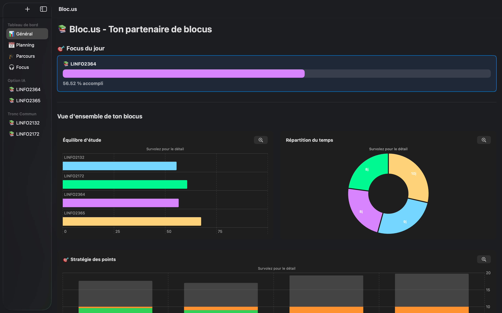
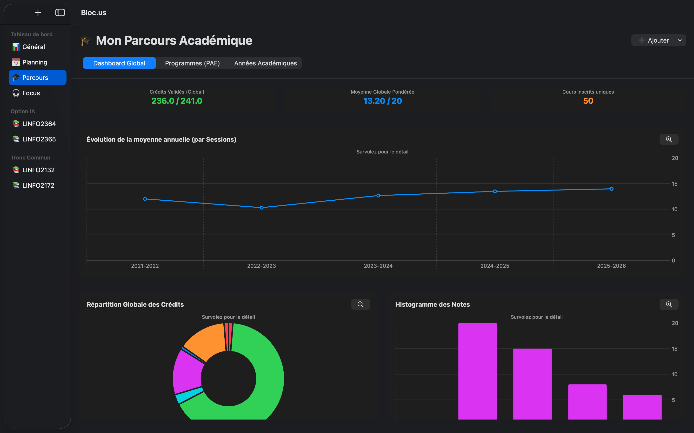
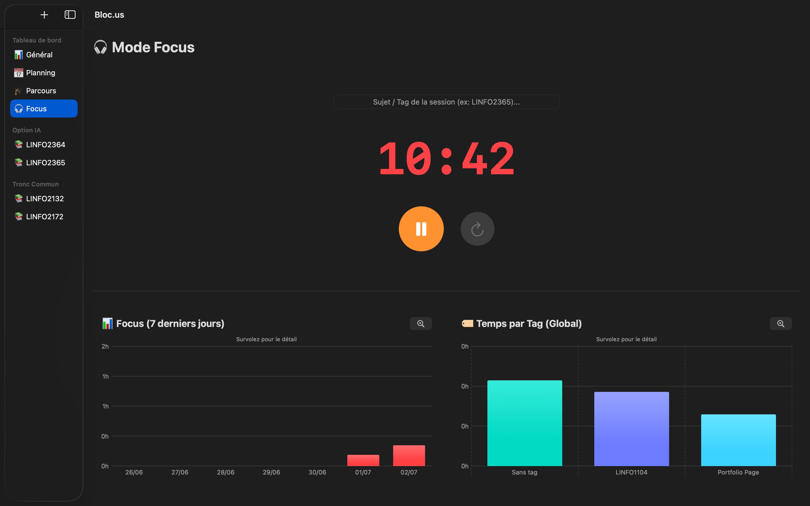

La boîte à outils parfaite.
Tout ce dont vous avez besoin pour ne rien oublier, réuni dans une interface native et épurée.
Votre tableau de bord intelligent
Ne vous laissez plus submerger. Le Focus du jour filtre votre calendrier et vous montre uniquement les objectifs et tâches de la journée.
Visualisez d'un clin d'œil votre équilibre d'étude, vos points stratégiques et la répartition de votre temps grâce à nos graphiques interactifs.
Suivez vos pourcentages d'accomplissement de chaque cours en temps réel pour une motivation visuelle constante.

Cours, Tâches & Simulation
Découpez la montagne en étapes : Divisez chaque matière en petites tâches (Slides, Vidéos, TPs) et savourez la satisfaction de voir vos barres de progression se remplir.
Micro-gestion avec les TODOs : Chaque cours possède sa propre liste de tâches logistiques. Assignez des dates limites, cochez vos réussites et gardez l'esprit libre.
Simulateur de réussite : Entrez vos notes d'évaluation continue. L'app calcule instantanément les points exacts qu'il vous reste à décrocher le jour de l'examen final.

Gérez votre Parcours Académique
Ayez une vision macro sur vos études. Suivez en un clin d'œil votre moyenne globale pondérée et vos crédits validés.
Encodez vos programmes complets pour analyser votre succès académique sur le long terme : évolution année par année, taux de réussite par session, et notes maximales par cours.

Mode Focus & Tracker de Productivité
Gagnez en concentration profonde. Le Mode Focus coupe le bruit ambiant pour vous dédier totalement à votre tâche.
Associez chaque session à un commentaire précis (ex: *LINFO1101*) et trackez votre temps de travail exact pour analyser vos performances dans notre hub analytique.

Un planning visuel et intuitif
Planifiez vos sessions d'étude et vos examens en quelques secondes. Le calendrier interactif vous offre une vue globale sur votre mois avec un code couleur par cours.
Mode "Alerte Examen" : Le jour J, l'application passe en mode alerte. Ouvrez l'application et retrouvez instantanément l'heure exacte et le local de votre épreuve pour arriver serein.